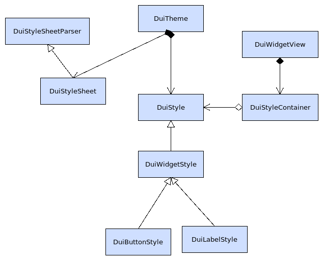
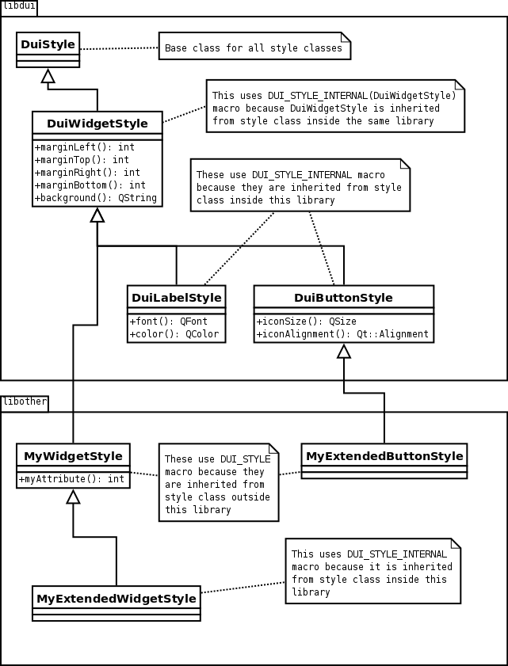
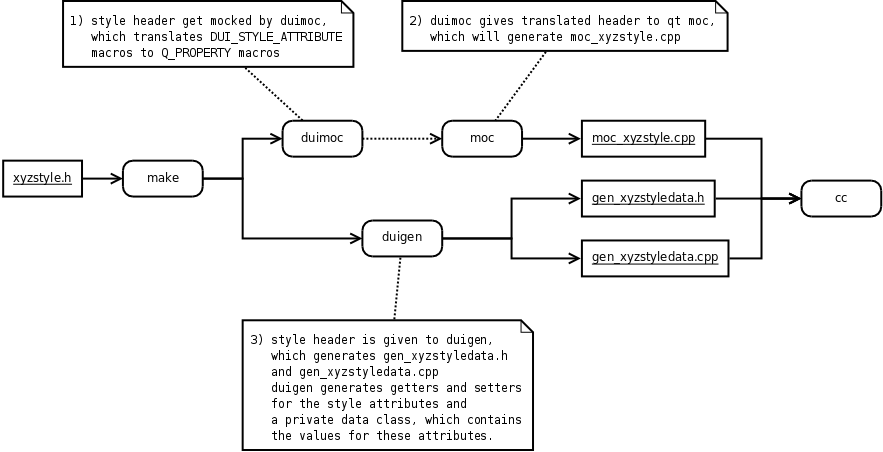

| Home · All Classes · Main Classes · Deprecated |
In MeeGo Touch Framework, the theme is the basis for all styling. If you change the theme in the runtime, the look and feel for the whole system can radically change. The following figure shows the basic building blocks of the MeeGo Touch style system. It also illustrates how the styling is integrated with the widgets.

Architecture of the MeeGo Touch styling system
All the style objects are used by the theme class. Theme class provides services to create a new style object and release it. It reference counts all the style objects and provides a cache, which allows multiple widgets to share same style objects, therefore optimising the speed and memory consumption of the system.
This class parses style sheets. It reads style sheet files and converts them to the data structure in the memory. It also provides services for dumping the whole data structure to disk and reading it back into the memory. This is a huge optimisation since the whole parsing process can be bypassed after the style sheet has been processed once.
This class provides support for the actual cascading process when the style sheet is being processed runtime. It is responsible for populating the style classes and handling all the style attributes in a type-safe manner.
MStyle class is the actual container for all the style attributes. The attributes are stored as Qt properties and they can be therefore accessed easily and animated later on using property animators. MStyle is a base class for all the styles.
These are MStyle-derived classes, providing a set of attributes for the same type of widget. Basically there is one style class for each stylable component in the MeeGo Touch Framework.
MStyleContainer class groups multiple MStyle instances together. It provides services like indicating the mode of the stylable object to the style system or, later on, even animating attribute values between different styles. The style is always accessed through the container.
Creating a new style class is a relatively simple process. Basically, you just derive from the style class that you want to inherit from and add the attributes you need. In this example, since a new style is created for a custom widget, you start by deriving the new style class from the MWidgetStyle class.
Note: When declaring a new style class, either the M_STYLE or M_STYLE_INTERNAL macro needs to be declared inside the class in the header file. Use M_STYLE when you inherit your style class from a style class which is defined outside of your library/application. Use M_STYLE_INTERNAL when you inherit from a style class which is defined in the same library/application you are working with. The macro creates a private data member to your class, which stores the real attribute data of your style class later on during the process.
class MyWidgetStyle : public MWidgetStyle { Q_OBJECT M_STYLE(MyWidgetStyle) };
Attributes are declared by using the M_STYLE_ATTRIBUTE(type, name, Name) macro. This macro generates accessor methods to your attribute and it also creates Q_PROPERTY definition for it, making your attribute exist in the Qt's meta object. M_STYLE_ATTRIBUTE has the following parameters:
The name parameter of the macro is converted to style sheet-attribute name so that every camelcase letter is converted to dash and lower-case letter (for example, marginLeft becomes margin-left).
The following example illustrates a new style class with two defined attributes:
class MyWidgetStyle : public MWidgetStyle { Q_OBJECT M_STYLE(MyWidgetStyle) M_STYLE_ATTRIBUTE(int, borderWidth, BorderWidth) M_STYLE_ATTRIBUTE(QColor, borderColor, BorderColor) };
Next, you can create a container class for the style objects of this type. Style container provides access to the actual style data and also makes it possible to indicate to the style system that your stylable object has changed from one mode into another. The following macros are available:
If you used M_STYLE in the style class, you must use M_STYLE_CONTAINER in the container class. If you used M_STYLE_INTERNAL in the style class, you must use M_STYLE_CONTAINER_INTERNAL in the container class. This macro automatically generates an accessor operator and reloads the style data if the mode changes while the application is running. Note: You must use the type of the style class that you created as the parameter of the macro.
The following example illustrates how the style container needs to be inherited from the corresponding container class:
MyWidgetStyleContainer : public MWidgetStyleContainer { M_STYLE_CONTAINER(MyWidgetStyle) };

Macros used in different libraries and executables
If you decide to support modes in your style class, those can be defined with the M_STYLE_MODE macro. This macro expands to a method, which enables the corresponding mode. For example, M_STYLE_MODE(Indexing) expands to a setModeIndexing() method, which can be called to start retrieving attribute values from that mode.
The following example illustrates how to add modes to the container:
MyWidgetStyleContainer : public MWidgetStyleContainer { M_STYLE_CONTAINER(MyWidgetStyleContainer) M_STYLE_MODE(Indexing) M_STYLE_MODE(SecondMode) };
The new style class is now ready to be configured through the style sheets. For more information, see Styling with style sheets.
MeeGo Touch provides a simple way to access the style attributes by providing a style instance for the stylable object. This class contains simple accessor methods which allow you to read the values of the attributes. The name of the accessor method is defined by the second parameter in the M_STYLE_ATTRIBUTE macro. The following example illustrates how to access the style:
// assuming that widget is using MyWidgetStyle void MyWidgetView::doSomePainting(QPainter& painter) { . . // at same point, access style attributes int borderWidth = style()->borderWidth(); painter.setPen(style()->borderColor()); . . }
When the style changes in runtime, the MWidgetView::applyStyle method will be called. It means that the attributes are reloaded with new values and they are ready to be used. This method is virtual and it can be overridden in the derived classes. See the following example:
// in MyWidgetView.h class MyWidgetView : public MWidgetView { Q_OBJECT M_VIEW(MyWidgetModel, MyWidgetStyle) . . protected: // we want to do something when the style changes virtual void applyStyle(); . . }; // in MyWidgetView.cpp void MyWidgetView::applyStyle() { MWidgetView::applyStyle(); // do whatever you want here... }
There are two helper tools which facilitate the creation of new style classes. These tools are mgen and mmoc. It is important to note that you do not have to use these tools, everything can be done without them. So if you decide to bypass the toolchain, it means that you have to write all the private classes and attribute accessor methods by yourself. Writing all the files requires a lot of work and makes you responsible for maintaining the files. Since the toolchain carries out most of the work during the compilation process, you should consider using it.
mgen generates private data classes and their content for all the styles. It also generates the constructor/destructor code to your style class along with all the required accessor methods. Everything is generated and compiled during the make process.
mmoc is a pretty simple script. Because Qt's moc doesn't know how to expand macros, there needs to be a way to expand the M_STYLE_ATTRIBUTE macros for it. The mmoc tool expands them to Qt's Moccer so that the Q_PROPERTY macro is translated by the Qt Moc.

Integration of mgen and mmoc into the build process
To use the helper tools automatically:
1. Add CONFIG += meegotouch to your .pro file. 2. To declare your model and style header files to be processed, add them into the MODEL_HEADERS and STYLE_HEADERS.
Note: Your style and model headers must also exist in the common HEADER section, see the following example:
TEMPLATE = app
TARGET = mywidget
CONFIG += meegotouch # Requires libmeegotouch to be installed
# Input
SOURCES += main.cpp mywidget.cpp
HEADERS += mywidget.h mywidgetstyle.h mywidgetmodel.h
MODEL_HEADERS += mywidgetmodel.h
STYLE_HEADERS += mywidgetstyle.h
INCLUDEPATH += ../../src/include
QMAKE_LIBDIR += ../../lib/
To use parent-child relationship in styling, assign a parent to the widget which needs to be styled. This can be achieved by calling QGraphicsItem::setParentItem method for the MWidgetController. After that, the system is aware of the widget's parent, and is thus able to assign a proper style for it.
If the state of your stylable changes, you need to inform the styling system about it. This is done by calling the corresponding method in the MStyleContainer class. For example, if you have defined a mode 'Selected' to your style container class, you can call the setModeSelected() method to enable that styling. The styling system uses the mode as a parameter in MTheme::style calls when it reloads the styles, see the following example:
// assume that this is defined in the MWidgetStyleContainer class M_STYLE_MODE(Selected) void MWidgetView::myEventHandler() { // Access style container and change the mode to selected style().setModeSelected(); }
By assigning an object name to the stylable object, the system identifies that the object needs unique styling. If this styling is defined in the style sheet, it is automatically applied by the system. The object name is assigned to the stylable object by using the QObject::setObjectName method. The styling system uses the object name as a parameter in MTheme::style calls when it reloads the styles, see the following example:
// Assume that this is created earlier somewhere MButton* button; // this will assign a name for this widget, therefore enabling the named style for it button->setObjectName("mybutton");
Style changes and reloading during the device orientation change is a relatively automatic process, at least for the widgets. Basically, all the styles are reloaded automatically and the styling system uses the device orientation as a parameter in MTheme::style calls.
| Copyright © 2010 Nokia Corporation | MeeGo Touch |